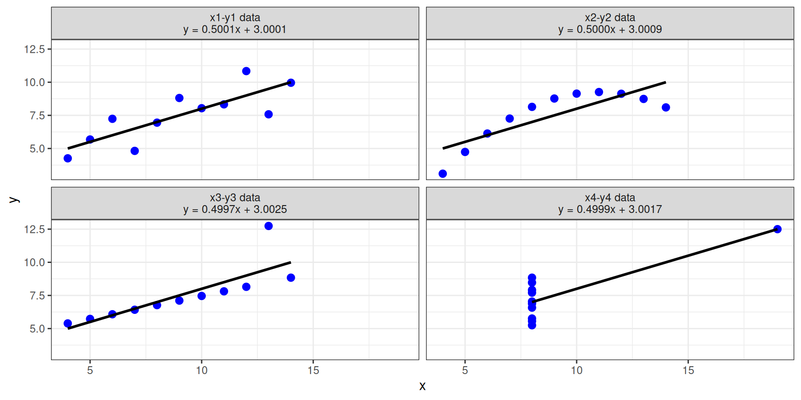

flowchart LR
A["Data"] --> B["Questions"]
B --> C["Analysis"]
C --> D["Visual encoding"]
D --> E["Visualization"]
E --> F["Interpretation"]
F --> G["Communication"]
style A fill:#dceeff,stroke:#3572a5
style D fill:#fff0cc,stroke:#c18b20
style E fill:#d8f3dc,stroke:#39834b
style G fill:#dceeff,stroke:#3572a5
Data Visualization in the Age of AI
From creating visualizations to supervising intelligent systems
Venustiano Soancatl Aguilar
7th International Conference on Artificial Intelligence and Data Science (2026) — UNCA
2026-01-01
What is data visualization?
Data visualization is the graphical representation of quantitative and qualitative information.
But why do we visualize data?
- Explore: Discover patterns, trends, and relationships.
- Validate: Assess assumptions and the validity of a model.
- Communicate: Explain findings and support decision-making.
- Understand: Make complex information accessible.
The visualization pipeline
A visualization is not simply a chart.
It is the result of a sequence of decisions.
Every stage involves decisions.
A poor decision early in the pipeline can compromise the final visualization.
The communication model

The message received is not always the message sent.
What makes a visualization effective?
An effective visualization enables its intended audience to perceive the intended message quickly and accurately.
- Can the audience identify the main message?
- Is the level of detail appropriate?
- Is the visual representation appropriate for the data?
- How much cognitive effort is required?
- Does the visualization support the intended task?
Important
Effectiveness is not about making a chart look attractive.
It is about making information understandable and useful.
Simple charts, complicated problems
A pie chart or a bar chart seems straightforward.
But consider a dataset with:
- More than five variables.
- Multiple categories.
- Millions or billions of records.
- Different temporal and spatial dimensions.
The challenge is not necessarily displaying more data.
The challenge is deciding what information deserves attention.
There is also a fundamental constraint:
The resolution of a computer screen is limited.
The constraints of visualization
We cannot display everything simultaneously.
We must make choices.
Data complexity
- Number of variables.
- Number of observations.
- Data dimensionality.
- Missing values.
- Relationships between variables.
Human constraints
- Audience expertise.
- Available attention.
- Visual perception.
- Cognitive effort.
- Time available for interpretation.
Visualization is fundamentally a process of selection, abstraction, and prioritization.
Data visualization vs. data literacy
These concepts are related, but they are not interchangeable.
Data visualization
The representation of information through visual elements.
- Charts and graphs.
- Visual encoding.
- Layout and composition.
- Interaction.
- Visual communication.
Data literacy
The ability to work critically and effectively with data.
- Read and interpret.
- Question and evaluate.
- Understand uncertainty.
- Identify misleading representations.
- Communicate evidence-based insights.
Visualization helps us see data. Data literacy helps us understand, question, and use it.
The text-only interface as a fundamental bottleneck
Sometimes you don’t have the vocabulary to describe what you envision.
You might imagine:
- A particular spatial arrangement.
- A specific visual relationship.
- An interaction between multiple elements.
- A composition that communicates a particular idea.
But you might not know the terminology required to describe it.
The problem is not necessarily a lack of ideas. It may be a lack of vocabulary.
Asking the right questions
To ask the right question is already half the solution of a problem.
— Carl Jung (attributed)
The challenge of asking good questions is much older than artificial intelligence.
Consider the Socratic tradition.
The Elenctic method
The term elenctic derives from the Greek elenchein, meaning to cross-examine or refute.
Rather than immediately providing answers, Socrates used questions to examine assumptions and expose contradictions.
Learning through questions
Consider some of the questions associated with Socratic inquiry:
- What is justice?
- What is knowledge?
- What is virtue?
- What makes something good?
These questions do not necessarily have straightforward answers.
They require us to:
- Define concepts.
- Examine assumptions.
- Identify contradictions.
- Refine our understanding.
- Ask better questions.
The quality of our thinking influences the quality of our questions.
From laborers to supervisors
AI is changing the relationship between humans and the production of knowledge.
Before AI
The human as implementer
- Write code.
- Process data.
- Create charts.
- Adjust layouts.
- Implement interactions.
With AI
The human as supervisor
- Define problems.
- Establish objectives.
- Specify requirements.
- Evaluate outputs.
- Provide feedback.
- Exercise judgment.
The work does not disappear.
The nature of the work changes.
The center-of-distribution problem
What happens when we do not know precisely what we want?
AI tends to produce a statistically plausible response based on its learned patterns and the context provided.
The result may be reasonable, conventional, and technically correct.
But is it what we actually need?
The problem
When we cannot articulate our intentions, we risk receiving the statistical average rather than the particular solution we envisioned.
The consequence
The ability to exercise design judgment becomes increasingly valuable.
Anscombe’s quartet: identical statistics, different data
Four datasets with the same means, variances, correlation, and regression line:
library(ggplot2)
q <- data.frame(set = factor(rep(1:4, each = 11)),
x = unlist(anscombe[paste0("x", 1:4)]),
y = unlist(anscombe[paste0("y", 1:4)]))
lab <- sapply(1:4, function(i) {
cf <- coef(lm(y ~ x, data = q[q$set == i, ]))
sprintf("x%d-y%d data\ny = %.4fx + %.4f", i, i, cf[2], cf[1])
})
ggplot(q, aes(x, y)) +
geom_point(color = "blue", size = 2.5) +
geom_smooth(method = "lm", se = FALSE, color = "black") +
facet_wrap(~ set, ncol = 2, labeller = labeller(set = setNames(lab, 1:4))) +
theme_bw()
Summary statistics alone can hide radically different patterns.
Design becomes the scarce resource
When AI handles implementation, the bottleneck shifts.
Implementation
AI can increasingly help with:
- Programming.
- Data transformation.
- Chart generation.
- Styling.
- Repetitive tasks.
Design and judgment
Humans still need to:
- Define the problem.
- Understand the audience.
- Select visual encodings.
- Evaluate perception.
- Make design decisions.
- Recognize mediocre results.
Knowing what to ask for, exercising taste, and evaluating the result become the scarce resources.
What does being a supervisor require?
Being a supervisor is not simply writing a prompt and accepting the output.
It requires specific skills:
- Problem definition: What are we trying to solve?
- Goal setting: What should the result achieve?
- Communication: Can we specify our requirements?
- Feedback: Can we identify what needs improvement?
- Accountability: Can we evaluate the consequences?
- Judgment: Can we distinguish good results from mediocre ones?
These are skills that we must deliberately develop.
Implications for data visualization education
If AI handles more of the coding, should we spend less time learning?
Not necessarily.
In fact, the opposite may be true.
More theory, less mechanical practice
- Understand visual variables.
- Learn principles of human visual perception.
- Understand graphical perception.
- Study visual encoding and representation.
- Develop design cognition.
- Learn to evaluate and critique visualizations.
Important
Understanding design principles becomes more important, not less, because these principles enable us to supervise AI effectively and challenge mediocre outputs.
Think before generating
AI can generate high-fidelity visualizations very quickly.
But generating a polished result too early can be counterproductive.
A more productive workflow is:
flowchart LR
A["Understand the problem"] --> B["Explore possible solutions"]
B --> C["Develop your own ideas"]
C --> D["Discuss and refine with AI"]
D --> E["Specify requirements"]
E --> F["Generate visualization"]
F --> G["Evaluate and critique"]
G --> H{"Does it communicate?"}
H -->|No| D
H -->|Yes| I["Communicate insights"]
style A fill:#dceeff,stroke:#3572a5
style C fill:#fff0cc,stroke:#c18b20
style D fill:#fff0cc,stroke:#c18b20
style G fill:#d8f3dc,stroke:#39834b
style I fill:#dceeff,stroke:#3572a5
Think first. Generate later.
Decompose the problem
A useful principle when working with AI:
The more you chop your problem into small pieces, the better AI handles them.
Instead of asking:
Tip
“Create a complete and effective visualization of my dataset.”
Break the task into smaller questions:
- What is the structure of my dataset?
- What questions can I investigate?
- Which variables are relevant?
- What visual encodings are appropriate?
- What chart design communicates the message?
- How can I evaluate the result?
Decomposition makes complex tasks more manageable, both for humans and AI.
Final thoughts
- AI makes visualization implementation increasingly accessible.
- Accessibility does not automatically produce effective visualizations.
- Data literacy and design knowledge remain essential.
- Asking good questions requires understanding the problem.
- Supervising AI requires critical thinking and visual judgment.
The future is not just about generating visualizations.
It is about knowing what is worth visualizing.
References and further reading
Thank you!
Questions and discussion
What should we teach when AI can generate the visualization for us?